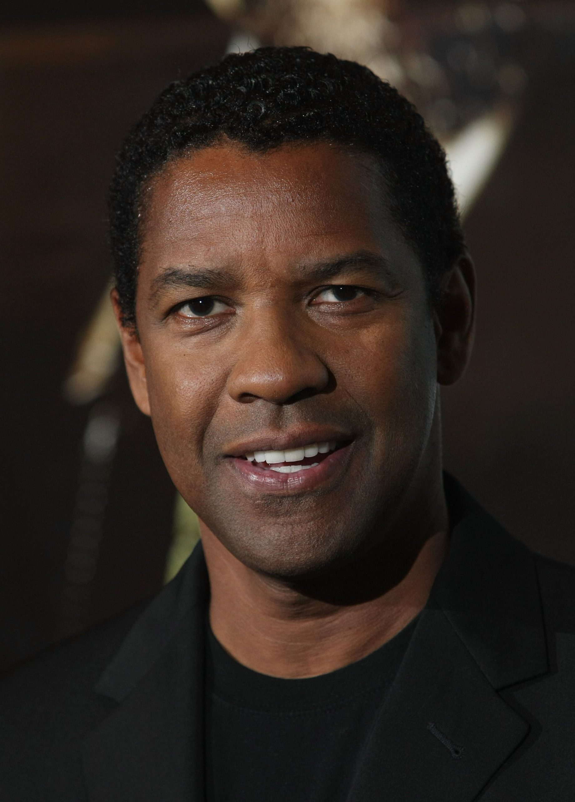
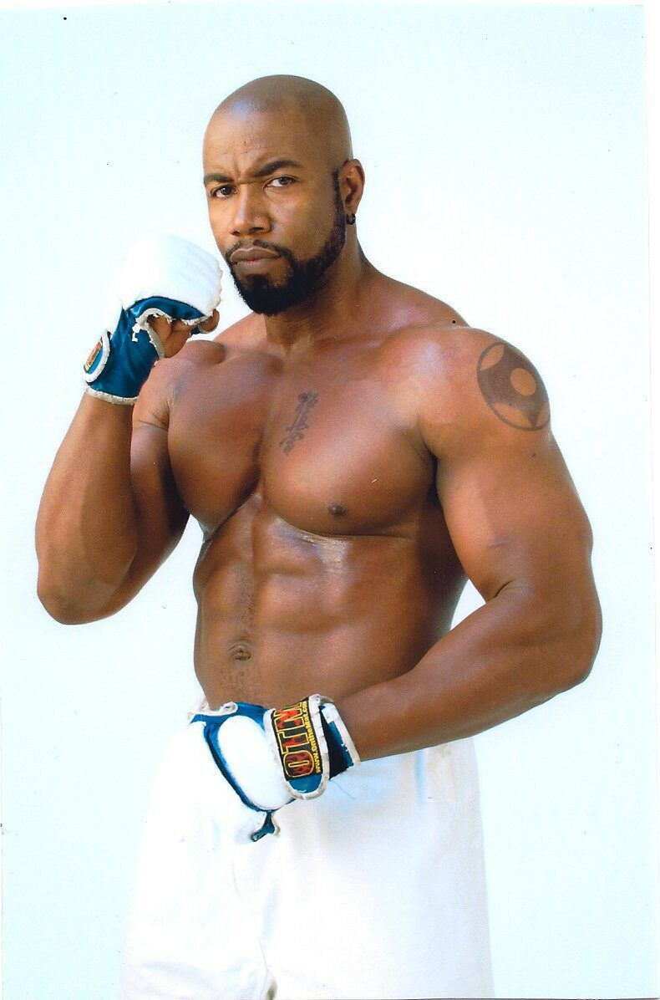

Acompanhe os atores selecionados por hollywood
Denzel Hayes Washington Jr. é um ator, produtor e diretor estadunidense.
Em uma carreira de mais de quatro décadas, Washington recebeu vários prêmios, incluindo um Tony Awards, dois Óscars, três Globos de Ouro e dois Ursos de Prata. Em 2016, recebeu o Prêmio Cecil B..
Scott Edward Adkins é um ator, produtor, roteirista e artista marcial britânico.
Ele interpretou o lutador de prisão russo Yuri Boyka no filme de 2006 O Imbatível 2 e suas duas sequências, O Imbatível 3:
Michael Jai White é um ator e diretor americano. É também um profissional de artes-marciais que atuou em vários filmes e séries.
Michael é conhecido por ter interpretado, Al Simmons, o protagonista do filme de 1997 "Spawn, O Soldado do Inferno" entre outros papéis.
